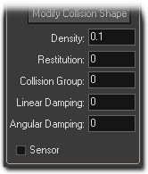
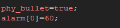
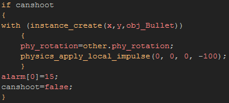

Tutorial
Page 6 of 7
Shooting
We will need to make our player ship shoot, so lets create (or load) a new sprite for that, then create a new object called "obj_Bullet" and assign it the new sprite. We
need to also turn on the physics for this object and assign it a Collision Shape, but unlike the ship object a simple box shape will do fine. So select Box
for the shape and then open the fixture editor and make sure it is correctly aligned to the sprite. Next set up the rest of the physical properties as shown in this image:

We have set almost everything to zero, as we don't want it to bounce, we don't want it to slow down over time and we don't want it to curve when hit (it will be destroyed
anyway so really this makes no difference). We have also given it a really low density.
As this is going to be a fast moving object we need to set a special property of the object to tell the physics that it will need to do some extra calculations for it so that its
collisions are correct. Add a create event to the object with the following code:

We have now told GameMaker:Studio that this is a fast moving object, and we have set an alarm to destroy it after a set length of time. So now add an alarm[0]
event and in that add and instance_destroy() function. Finally, add a step event, where you should call the previously created "phy_wrap()" script so that the object will
wrap around the screen if it leaves the room.
To create the bullet, you need to add a new variable "canshoot" into the create event of the player object (this will control the rate of shooting) and set it to true, then
add an alarm[0] event too and place the same "canshoot=true" code in that. Finally place the following code in the keyboard SPACE event of the player:

The above code will create the bullet at the player position, then set it's directional angle to that of the player. It then applies a local impulse to the bullet to send it shooting off
on it's way. An impulse is used, rather than a force, because it does not take into consideration any factors like velocity or torque and so applies an instantaneous "kick" in the desired direction.
After that we set the player "canshoot" variable to false and call the alarm to set it to true again.
Save the game and test it (don't forget to change things around and see what happens!).
Click on the Next button to go to the next page of the tutorial.